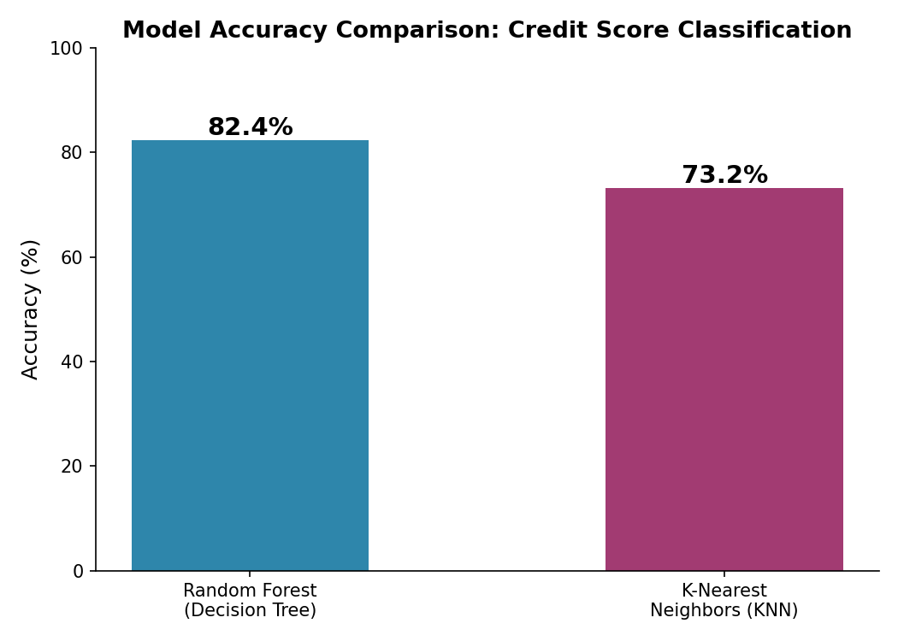

A machine learning model that classifies bank customers into credit score categories — Good, Standard, or Poor — to support automated credit line decisions.
A bank needs to decide how much credit to offer new customers, and whether to offer credit at all. Instead of manually reviewing each customer's financial history, this project builds a model that predicts a customer's credit score category based on their financial profile, so credit decisions can be automated and scaled.

The Random Forest model was selected as the final model due to its higher accuracy and stronger resistance to overfitting on this dataset, and was used to classify new customers into Good, Standard, or Poor credit score categories.